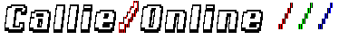
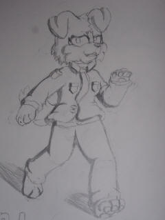
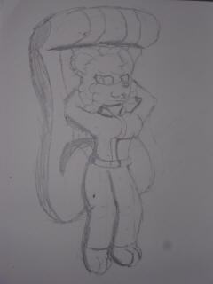

Border artwork (C) 2026 Axl Woodland

Welcome to Callie/Online! Callie online is
a web comic by Axl Woodland. Spend some time
with Callie and let her
show you everything the planet Viona has to offer!
...Even the unusual bits.
How will this work? If I can't think of a
topic to base a strip off of, I'll instead get a random word and make an entire comic strip based off
of it! I've given
myself a bunch of test words and were able to successfully come up of potential comic
strips! You'll be able to tell which ones were random words, and which were
thought up of. For one's i've come up with, I'll give them the [S]
flare. Normal strips done via a word picker will have the [W] flare.
Meet the gang!

A hyperactive collie with a love for meeting new people. Any day spent with her is guaranteed a good one.

A laid-back skunk with an attitude for adventure - ...and teasing the heck out of you with her huge tail. No stink at least.
Pre-emptive Q/A
Q: How many strips do you plan on getting out a month?
A: I plan on getting 2 out every month, but 1 at the absolute minimum. This will also depend on a number of factors. For instance, those beyond my control such as hardware failures, family, schedules, or just motivation in general.
Q: I somehow like these strips enough to print them, or I can't read the strips properly!
A: You are free to print out each strip as long as you
refrain from defacing the artwork or my signatures in any manner.
You can obtain a higher resolution version of your chosen strip by simply just
clicking them. This will also help for those who can't read the thumbnail
versions.
Q: I wish to get updated on new strips.
A: You're in luck! Callie/Online has an RSS feed available. If correct function continues, then you should automatically receive a new strip on a compatible system and/or program as soon as it's posted! Thanks to TReKiE for assisting with this feature! I've tested this with success on various devices:
Samsung SGH-E900 (Opera Mini 4)
Mozilla Thunderbird (Windows 7)
Internet Explorer 11 (Windows 7)
Outlook 2007 (Windows Vista, Windows XP)
E-Mail based messages are not planned.
Q: This seems to share a lot of similarities with Sabrina Online?
A: I can see why, but I will try my best not to make things too similar. Callie Online does take huge inspiration from Eric Schwartz' "Sabrina Online" Webcomic. The only reason I picked Callie/Online as the name was purely because I just like how "[...] Online" comes out, you know? If things get too similar, please don't speak for anyone involved with S.O. This will make matters worse for both sides. If Eric has an issue, he's free to contact me directly via FurAffinity Notes Or E-Mail to discuss the matter and/or resolutions.
Created with love by Axl Woodland. Last Update: 24/11/2026